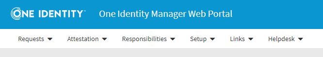
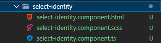
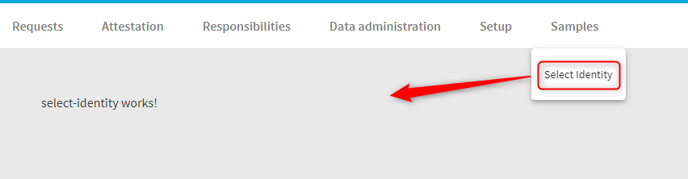

In the previous example, we added a tile component to the dashboard to block a user's account.
In this example, we want to add a new item to the portal main menu to achieve the same functionality.
The main menu (projects\qbm\src\lib\menu) is a central component, just like the dashboard.

New menus and menu items are dynamically added to the main menu via a plugin system.
Before we implement the menu, we have to add a route that navigates to the (currently empty) component where you can select the identity you want to block.
We will name the new component SelectIdentityComponent.

First we add a new entry to the routing table.
Code
const routes: Routes = [
:
{
path: 'selectidentity',
component: SelectIdentityComponent
}
];Now we can add the new menu with the associated route. Again, as in the previous example, this is done in the init service (init-service.ts). In the code snippet below, only the part where the menu is added is shown, the rest is hidden.
Code
:
@Injectable({ providedIn: 'root' })
export class InitService {
:
public onInit(routes: Route[]): void {
this.addRoutes(routes);
:
}
private addRoutes(routes: Route[]): void {
const config = this.router.config;
routes.forEach((route) => {
config.unshift(route);
});
this.router.resetConfig(config);
}
private setupMenu(): void {
this.menuService.addMenuFactories(
:
(preProps: string[], __: string[]) => {
return {
id: 'ROOT_SAMPLES',
title: '#LDS#Samples'
items: [
{
id: 'SAMPLE_SELECT_IDENTITY',
route: 'selectidentity',
title: '#LDS#Select Identity'
},
],
};
);
}
}You can add menus and menu items via the menu service (projects\qbm\src\lib\menu). The structure of the menu and the menu items is defined by the menu-item.interface.ts file. The most important properties are "id" and "title". If you add a menu item, the "route" property specifies the route of the component to be displayed.
Here is an extract of the file.
Code
import { ProjectConfig } from 'imx-api-qbm';
import { NavigationCommandsMenuItem } from './navigation-commands-menu-item.interface';
/** Represents a single menu item. */
export interface MenuItem {
/** Unique identifier for the menu item. */
readonly id?: string;
/** Display name. */
readonly title: string;
/** Returns a descriptive text, intended for tooltips. */
readonly description?: string;
/** Property for simple navigation. */
readonly route?: string;
/** Property for sorting the items. */
readonly sorting?: string;
/** Property for complex navigation, including outlets etc. */
navigationCommands?: NavigationCommandsMenuItem;
/** Called when the menu item is clicked. */
readonly trigger?: () => void;
/** Submenu items. */
items?: MenuItem[];
}
export type MenuFactory = (preProps: string[], groups: string[], projectConfig: ProjectConfig) => MenuItem;
The final result looks like this.
